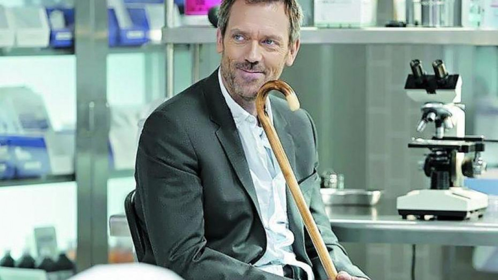
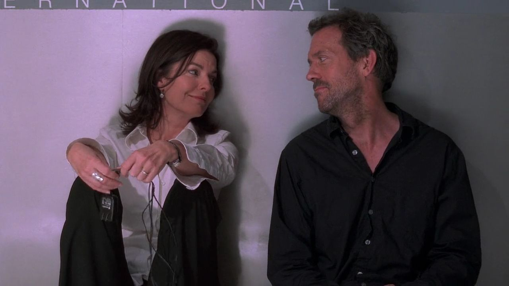
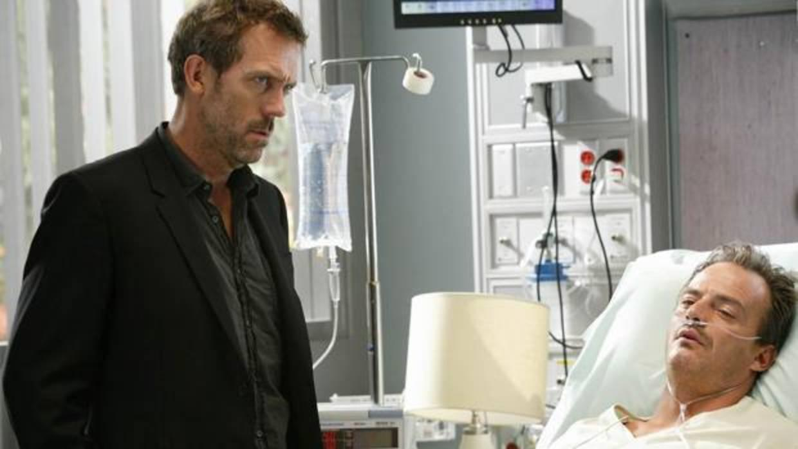
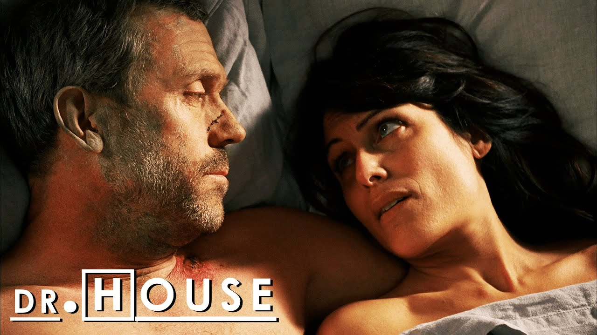

Historia
El Dr. House es conocido por su actitud poco convencional, su sarcasmo y su brillantez médica. Es un genio diagnóstico que tiene la habilidad de resolver casos médicos complejos que otros médicos no pueden resolver. House utiliza su intuición y su capacidad para observar hasta los detalles más pequeños para llegar a conclusiones precisas.
Sin embargo, la personalidad del Dr. House también es problemática. Es un hombre solitario y antisocial, con una dependencia de analgésicos debido a un dolor crónico en la pierna, resultado de una lesión previa. Además, su actitud desafiante y su falta de empatía hacia los pacientes y colegas a menudo generan conflictos en el hospital.
Infancia y juventud
Gregory House es hijo de John y Blythe House. Su padre era un piloto militar (coronel) que fue transferido a varios lugares del mundo. Uno de los países en donde vivió la familia fue Egipto, donde House quedó fascinado por la arqueología, la alquimia y los tesoros, lo cual permanece hasta su madurez. Otro de los sitios de residencia fue el archipiélago de Japón, en donde, a los catorce años de edad, House descubrió su vocación por la medicina cuando presenció el respeto del que gozaba un médico perteneciente a la baja clase social de los buraku al que acudían diversos doctores cuando no sabían cómo curar a su paciente.
House quiere a su madre pero odia a su padre, a quien denomina «brújula moral demente», y deliberadamente intenta evitar a ambos progenitores. En un punto, House relata una historia de sus padres dejándolo a cargo de su abuela, cuyos castigos constituían abuso infantil. Más tarde confiesa que era su padre quien lo maltrataba. En la quinta temporada, cuando su padre fallece, House sospecha que el difunto no era su padre biológico. Muy poco antes del sepelio, el médico decide extraerle un fragmento de oreja al cadáver y realizar una prueba de ADN: finalmente, la prueba demuestra que John House no era su padre verdadero.
Gregory House se doctoró, con especialidad en enfermedades infecciosas, en la Universidad Johns Hopkins.Durante el tiempo que pasó en la universidad, fue sorprendido copiando en un examen por un compañero llamado Philip Weber, quien en última instancia logró su expulsión. Debido a esto, House continuó sus estudios en la Universidad de Míchigan y allí conoció a Lisa Cuddy, con quien tuvo una relación amorosa de una noche y que se convertiría posteriormente en su jefa.

Relación con Stacy Warner
Casi diez años antes del comienzo de la serie, en los años 90, el doctor House conoció a una abogada llamada Stacy Warner (Sela Ward) en un partido de paintball donde competían abogados contra médicos e iniciaron una relación. Cinco años después, durante un partido de golf, el médico sufrió un infarto en el cuádriceps de su pierna derecha y no fue correctamente diagnosticado durante los tres primeros días, debido a las preocupaciones de los doctores de su comportamiento como adicto a las drogas. Al final, House se diagnosticó a sí mismo: un aneurisma en su muslo se había coagulado, llevando a un infarto y causando que el músculo quedase inmóvil. House se sometió a un bypass en su pierna para restaurar la circulación sanguínea, arriesgándose a que sus órganos fallasen y a un paro cardíaco. Luego, House fue puesto en estado de coma, para dormir sin sufrir dolor, pero Stacy actuó contra su voluntad y autorizó una cirugía más segura entre la amputación y un bypass, extirpando el músculo muerto. Como resultado, House perdió parcialmente el uso de su pierna y el dolor quedó en estado crónico, debiendo caminar con bastón; toma vicodina con mucha frecuencia para evitar el dolor. House no había podido perdonar a Stacy por haber tomado semejante decisión, por lo que ella le dejó.
Al comienzo de la tercera temporada, House temporalmente vuelve a tener la habilidad de caminar y correr luego de un tratamiento especializado. Sin embargo, el dolor crónico en su pierna regresa, por lo que House vuelve a la vicodina y al bastón.
Cuando Stacy hace su primera aparición en la serie, está casada con un consejero escolar llamado Mark Warner. Aunque House y Stacy vuelven a pasar tiempo juntos y se reúnen brevemente durante la segunda temporada, House le dice a su exnovia que regrese con su marido, lo cual la deja asolada.

Médico en el Princeton-Plainsboro
El doctor Gregory House trabaja en el Hospital Universitario Princeton-Plainsboro de Princeton (Nueva Jersey), a las órdenes de la directora Lisa Cuddy (Lisa Edelstein) y como jefe de un equipo de diagnóstico. Su mejor y único amigo es el doctor James Wilson (Robert Sean Leonard), quien es jefe del departamento de oncología.
Los médicos del equipo de House son, durante las tres primeras temporadas de la serie, el doctor Eric Foreman (Omar Epps), la doctora Allison Cameron (Jennifer Morrison) y el doctor Robert Chase (Jesse Spencer). Al final de la tercera temporada, el equipo se disolvió.
Durante la cuarta temporada, House poco a poco seleccionó a tres nuevos miembros: la Dra. Remy «Trece» Hadley (Olivia Wilde), el Dr. Chris Taub (Peter Jacobson), y el Dr. Lawrence Kutner (Kal Penn). Durante la quinta temporada, Kutner se suicida con un disparo en la cabeza, dejando totalmente afligidos a los demás miembros del equipo.

Relación con Lisa cuddy
Debido a los métodos poco convencionales que House emplea con sus pacientes y a sus controvertidas perspicacias, habitualmente suele discutir con su jefa. No obstante, incluso pese a las demandas que acumula el equipo de House, Cuddy se niega a despedirle y lo considera como uno de los mejores médicos del hospital. Durante la quinta temporada, aunque parece que el médico y su jefa tienen una relación amorosa, House descubre que se trata de imaginaciones suyas provocadas por el uso excesivo de la vicodina. Por ello, decide ingresar voluntariamente en el Hospital Psiquiátrico Mayfield y se da cuenta de algo: lo único que controla el dolor de su pierna es resolver los enigmas médicos. De nuevo en el Princeton-Plainsboro, House reconoce que está enamorado de su jefa y decide conquistarla. Sin embargo, sus esfuerzos no le sirven de nada: ella tiene una relación con Lucas Douglas (Michael Weston), un detective que House contrató en el pasado para que espiara a Wilson.
En el último capítulo de la sexta temporada, House acude a un edificio derrumbado por una grúa. Allí, bajo los escombros, se encuentra una chica llamada Hanna que necesita ser atendida: tiene la pierna bajo los restos del edificio. House, que acaba entablando una relación de amistad con ella, se niega a amputarle la pierna, pero al final no tiene más remedio. Lo que el médico no imagina es que la chica muera por un embolismo graso causado por dicha amputación y eso le deja frustrado. Ya en su casa, House decide volver a tomar vicodina y, justo en ese momento, llega Cuddy. Le dice que ha dejado a Lucas y que en realidad está enamorada de él.
Durante la primera mitad de la séptima temporada, House se enfrenta a la madre de Cuddy y descubre que ella y su hija no se llevan muy bien. Además, aunque en un principio cree que Rachel —la niña pequeña que adoptó Cuddy— es tonta, finalmente acaba encariñándose con ella. Pero todo cambia cuando Cuddy enferma y House recae en la vicodina por toda la ansiedad que sufre. Ella decide romper con él, ya que quería estar con una persona que realmente pudiera sentir y compartir su dolor. La ruptura provoca que House haga cosas arriesgadas o estúpidas, sólo para distraerse de su amargura: se lanza a una piscina desde el balcón de un hotel o se casa con una ucraniana llamada Dominika (Karolyna Widra) para que consiga la residencia en Estados Unidos.
Sin embargo, lo más grave es que House roba una medicina experimental, probada únicamente en ratas, que tiene por objetivo restaurar nervios y músculos dañados. No obstante, cuando descubre que esta medicina causa tumores malignos en las áreas afectadas, él descubre que tiene tres en la pierna. Poco después, por la noche intenta extirparlos en la bañera de su cuarto de baño, pero al no conseguirlo, llama de emergencia a todos sus conocidos de confianza y la única que responde a su llamada es su expareja, Cuddy. Ella lo traslada al hospital, donde es atendido de emergencia y se asegura, a petición de House, de que no le amputen la pierna de no ser estrictamente necesario. Ya por la mañana House despierta en el hospital medianamente recuperado y habla con Wilson. Este le pide que deje de hacer tonterías y comience efectivamente a enfrentar su dolor. House habla con Cuddy y le dice lo frustrado y herido que se siente.
Cuando House decide aceptar su ruptura, a modo de simbolismo, decide devolverle a Cuddy un cepillo del pelo. Cuando llega a casa de la doctora y ve que tiene una cita, enloquece y estampa su coche en medio del salón de su jefa. Ella decide dejar el hospital y él, a pesar de que escapa de Estados Unidos, es detenido e ingresa en prisión.
